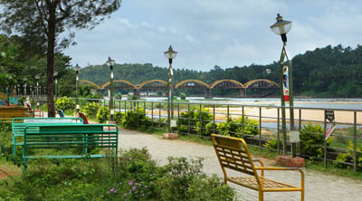
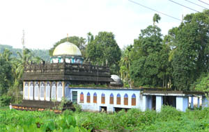

Bounded by the Nilgiris hills on the East and the Arabian Sea on the west, the district of Malappuram literally the land atop the hills, is remarkable for its unique natural beauty. Perched among the undulating hills and the meandering rivers that flow to reach the coconut-fringed seacoast, the land conceals a unique and eventful history.
The hill country also contributed much to the cultural artistic traditions of the state. The mosques and temples of the land are known for their spectacular festivals. The land of great poets and writers, political and religious leaders, the district has carved a unique place of its own in the history of Kerala
Home to the khilafath movement and the mappila revolts, which questioned the British authority in India.
Near to Malappuram civil station. On the bank of kadalundi river.

Muslim shrine and receptacle for dead bodies of the Thangals (the relegious leaders of the malabar muslims), situated in A.R.Nagar village, is a major pilgrimage centre of Muslims which located 26 km east of Tirur, Malappuram district.

Thirumandhamkunnu Bhagavthy temple is one of the ancient and famous Mahakshethras of Kerala. This shrine which is the foremost in the Bhadrakali temples. This Temple is located at Angadippuram in Malappuram district. The temple stands prominently on the top of a hillock with an attractive look and majestic apperearance.The scenic beauty, the bliss of solitude and mental pease imparted by this place will ever be in the mind of a devotee who had at least been once to this place.
.jpg)